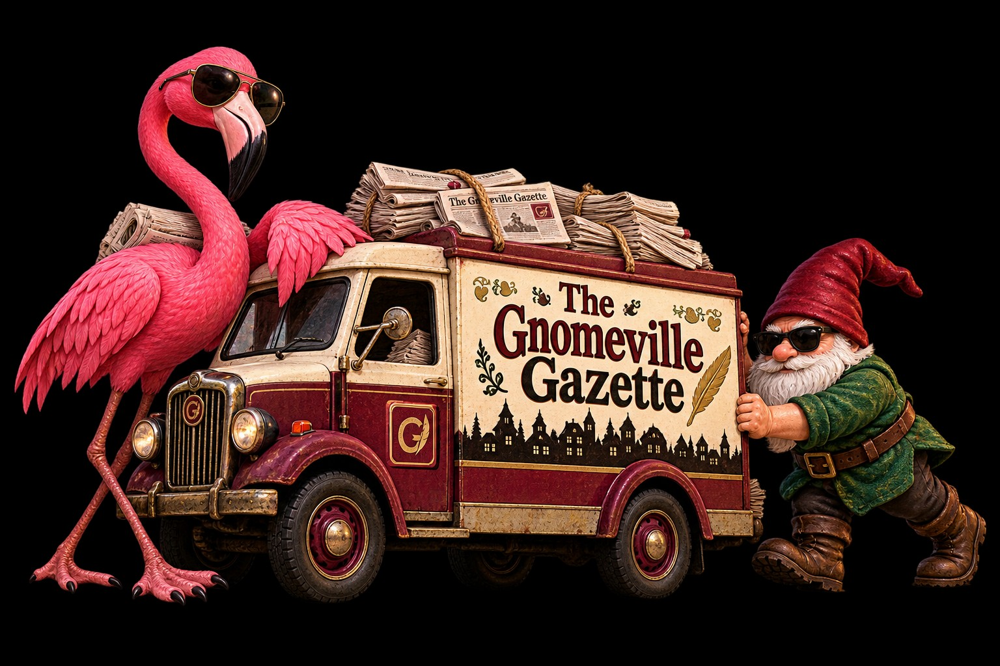

Special Delivery Pending
Comics & Puzzles

Our delivery team assures us that the next edition is just around the corner. No one has specified which corner.
Now Playing · Daily Puzzle
GNOMBLE
Five letters. Six attempts. One unnecessarily official judgment. Play the Gazette’s daily word game, see yesterday’s solution, and earn a highly questionable performance record.
Now Playing · Daily Association Puzzle
MUNICIPAL CONNECTIONS
Sixteen words. Four categories. Four mistakes permitted. Find the hidden associations and receive a thoroughly unnecessary municipal judgment.
The cartoonist is still refusing to work without snacks. Additional diversions remain under review.